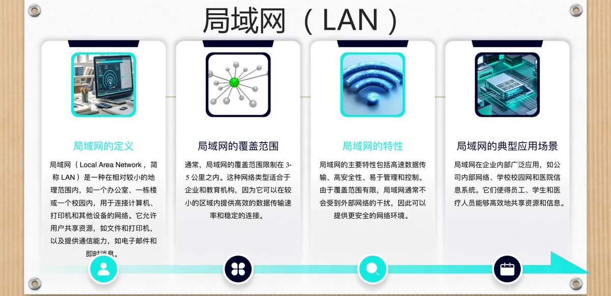
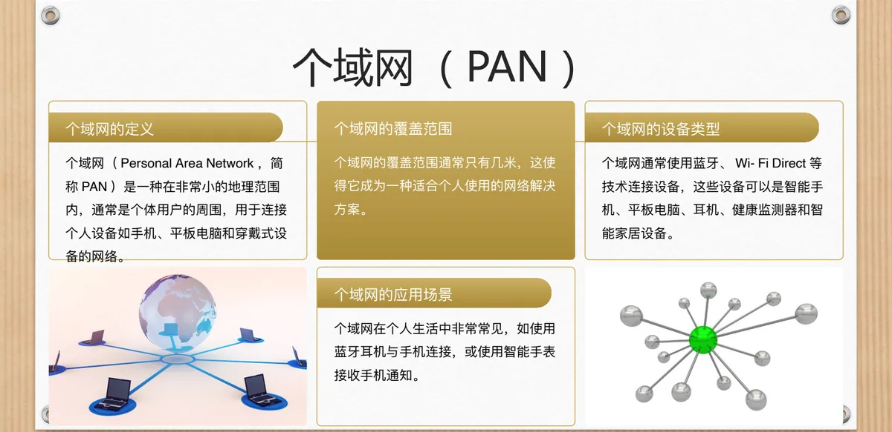
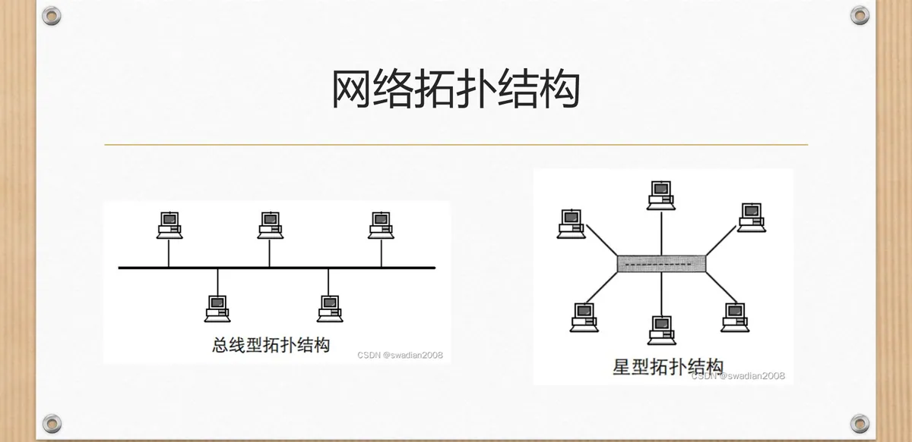
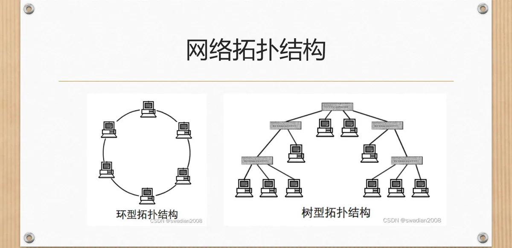
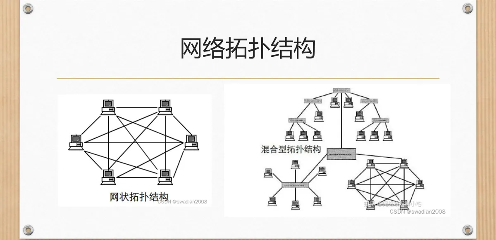

计算机通信与网络 · 第二版讲义 · 第 1 章 计算机网络概述
1.3 计算机网络的分类
同样一张网，换个角度看就有不同的名字。网络分类的视角不止一种，这里取两条最常用的线索：按作用范围分成局域网、城域网、广域网、个域网和因特网，按拓扑结构分成总线网、星型网、树形网、环形网、网状网和混合型网。前者决定一张网覆盖多大的地域、由谁运营，后者决定结点之间怎样连接，直接影响可靠性、成本与扩展方式。
1. 按作用范围分类
按作用范围划分，就是按网络覆盖的地理区域划分，从小到大的顺序是个域网 PAN、局域网 LAN、城域网 MAN 和广域网 WAN；因特网 Internet 也列在这一组里，因为它的范围是全世界。覆盖越小越容易做到高速、稳定、可控，覆盖越大越要借助公共网络基础设施和专门的运营者。下表把这一组网络放在一起对照。
| 网络类型 | 覆盖范围 | 传输速率与传输技术 | 典型应用 |
|---|---|---|---|
| 个域网 PAN | 通常只有几米 | 蓝牙、Wi-Fi Direct 等短距离技术（课件未给出速率） | 蓝牙耳机接手机、智能手表接收通知、智能家居设备 |
| 局域网 LAN | 3～5 公里之内（一个办公室、一栋楼或一个校园） | 高速数据传输，安全性高、易于管理，较少受外部干扰 | 公司内部网络、学校校园网、医院信息系统 |
| 城域网 MAN | 几公里到几十公里 | 提供高速互联网接入；由政府、电信公司或大型企业运营（课件未给出速率） | 连接城市内不同局域网，支撑城市级数据中心与云计算 |
| 广域网 WAN | 数百、数千甚至数万公里 | 经电话线、光纤和卫星链路等公共基础设施；由 ISP 运营并提供路由服务 | 跨城市、跨国乃至洲际传输；互联网是最著名的例子 |
| 因特网 Internet | 全球范围 | 由众多网络互连而成，性能取决于所接入的网络 | 全球范围的资源共享与通信 |
局域网 LAN（Local Area Network）在相对较小的地理范围内——一个办公室、一栋楼或一个校园——把计算机、打印机和其他设备连接起来，让用户共享文件和打印机，也提供电子邮件、即时消息这类通信能力。它的覆盖范围通常限制在 3～5 公里之内，正因为它小，才做得到高效的数据传输速率和稳定的连接，适合企业和教育机构。主要特性是高速数据传输、高安全性、易于管理和控制：覆盖范围有限，一般不受外部网络干扰。公司内部网络、学校校园网和医院信息系统，都是它的典型应用。

城域网 MAN（Metropolitan Area Network）把范围放大到一个城市或都市区域，连接的是多个局域网和广域网，通常由政府部门、电信公司或大型企业运营。它的覆盖范围从几公里到几十公里不等，对外提供高速互联网接入，对内把城市里不同的局域网连成一片，并支撑城市级数据中心与云计算服务。一个城市用它连接政府机构、图书馆、学校和其他公共服务设施，就是典型应用。
广域网 WAN（Wide Area Network）跨越广阔的地理范围，通常包括多个城市、国家甚至洲际连接，互联网就是最著名的广域网例子。它的覆盖范围可以跨越数百、数千甚至数万公里。广域网通常使用公共网络基础设施，如电话线、光纤和卫星链路来传输数据，让数据能在不同地理位置之间往返；运营上通常由互联网服务提供商 ISP（Internet Service Provider）经营，由 ISP 提供网络连接和路由服务。
个域网 PAN（Personal Area Network）是这一组里最小的一种，覆盖范围通常只有几米，连接的是个体用户身边的设备。它一般用蓝牙、Wi-Fi Direct 等技术把设备直接连起来，连的对象可以是智能手机、平板电脑、耳机、健康监测器和智能家居设备。用蓝牙耳机接听手机、戴智能手表接收通知，都是它的常见用法。

因特网 Internet 与上面四种不完全同类：它把全世界大量网络互连起来，不是按覆盖面积界定的那一类；1.2 节讲过它的成长过程，这里只需记住，它代表「全球」这一档。
2. 按拓扑结构分类
换个视角：不看网络铺多大，而看结点和链路连成了什么形状，这就是网络的拓扑结构。常见的有六种——总线网、星型网、树形网、环形网、网状网和混合型网。它决定信道怎样被共享、某处出故障会不会波及全网、增加新结点是否方便。
（1）总线型与星型
总线型网把所有结点串接到一条公共传输介质（总线）上，任一结点发出的信号沿总线传播、其他结点都能收到，因此存在发送权的争用；它布线省、增删结点方便，但总线一旦断开，其余结点都受影响。星型网把每个结点各自连到中心结点（集线器或交换机），结点间通信都经中心结点转发；它便于管理、单个结点故障不牵连别人，代价是中心结点一出问题整网瘫痪，线缆较多。

（2）树形与环形
树形网是星型网的层层叠加：若干星型的中心结点再向上连到更高层的结点。它便于分级管理和扩展，适合有层次的组织，但层次越高影响面越大。环形网把各结点首尾相接连成闭合环路，数据沿环一站一站传递，通常靠令牌方式决定谁有权发送；它路径确定、实时性较好，但环上任何一处断链都可能使环路中断。

（3）网状与混合型
网状网在结点之间建立多条通路，连成完整网状（全互连）或部分网状；它冗余度高，某条链路或结点失效，数据可以绕道而行；代价是链路多、维护成本高，多用于骨干网络。混合型网把几种结构组合使用，例如主干用网状保证可靠、接入用星型或总线节省成本，现实中的网络大多是混合型。

本节小结
- 网络分类的视角不止一种，本节取两条最常用的线索：作用范围与拓扑结构。
- 按作用范围由小到大：个域网 PAN（几米）→ 局域网 LAN（3～5 公里之内）→ 城域网 MAN（几公里到几十公里）→ 广域网 WAN（数百至数万公里）；因特网 Internet 代表「全球」这一档。
- 局域网高速、安全、易于管理，用于公司内部网络、校园网和医院信息系统；城域网连接城市内的局域网并支撑城市级数据中心与云计算；广域网借助电话线、光纤和卫星链路，由 ISP 运营；个域网用蓝牙、Wi-Fi Direct 连接个人设备。
- 按拓扑结构分六种：总线网（共用总线，省线但故障影响一片）、星型网（集中到中心结点，便于管理但中心是关键）、树形网（分层的星型）、环形网（首尾成环，路径确定但断链影响全网）、网状网（多路冗余，可靠但成本高）、混合型网（几种结构组合，现实中最多见）。
- 拓扑结构决定信道共享方式、故障影响范围与扩展的难易；速率、带宽、时延等指标见 1.4 节。